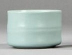
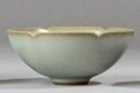
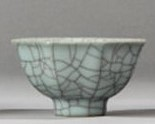
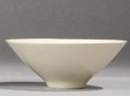
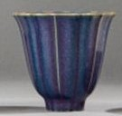

🎉 Alles Gute zum Geburtstag, Wolfgang! 🎂 Möge dieses neue Lebensjahr voller Freude und Entdeckungen sein!
QR‑Code scannen, um diese Seite zu öffnen
QR‑Code wird hier angezeigt
QR‑Code wird automatisch basierend auf der aktuellen Seiten‑URL generiert
Einleitung
Das Design dieses Teeservices ist inspiriert von den in der Palastmuseum aufbewahrten Porzellanschätzen aus der Song-Dynastie. Es orientiert sich an antiken Formen und verwendet sorgfältig ausgewählte Glasuren, um den faszinierenden Charme berühmter Song-Porzellane zu präsentieren. Die Song‑Dynastie (960–1279) war eine Blütezeit der chinesischen Keramikkunst. Unter den berühmten Brennöfen gelten die fünf großen Systeme – Ru (汝), Guan (官), Ge (哥), Ding (定) und Jun (钧) – als legendär. Diese Seite zeigt eine kompakte Übersicht mit Bildbeispielen und kurzen Beschreibungen.
Ru‑Brennofen

Ru‑Ware des späten Nördlichen Song‑Hofs: berühmt für himmelblaue Glasur („Regenhimmelblau“), feines Netz an Craquelé sowie kleine Stützpunkte von der Stützbrandtechnik. Seltene Hofkeramik mit kurzer Produktionszeit.
Hauptmerkmale:
Sanfte himmelblaue/entenblaue Glasur
Feines Craquelé (dichte Rissnetze)
Grauweißer, feiner Scherben
Guan‑Brennofen

Südliche Song‑Zeit, Hofnahe Brennöfen im Raum Lin’an (Hangzhou). Charakteristisch sind dicke Glasurschichten und Craquelé‑Muster in grob‑ und feingliedrigen Linien („Goldene Linien, eiserne Drähte“).
Hauptmerkmale:
Bläulich‑grüne bis graugrüne Glasur
Kontrastreiches Craquelé
Würdevolle Formen, dicker Scherben
Ge‑Brennofen

Berühmt für vollflächiges, netzartiges Craquelé („Eisrisse“) mit zwei Tonwerten. Glasurfarben reichen von grau‑blau bis elfenbein.
Hauptmerkmale:
Doppeltes Craquelé (hell/dunkel)
Ruhige, schlichte Formen
Grauer bis dunkelgrauer Scherben
Ding‑Brennofen

Weiße Glasur, häufig mit feinen Ritz‑ und Prägemotiven (Lotus, Päonie u. a.). Elegante, leichte Gefäßformen – „Schönheit der Schlichtheit“.
Hauptmerkmale:
Elfenbeinweiße Glasur
Ritz‑/Prägedekor
Feiner, heller Scherben
Jun‑Brennofen

Berühmt für spektakuläre Ofenverwandlungsfarben: himmelblau, mondweiß und purpurrote Wolken verlaufen malerisch. Häufig Becken, Schalen und Blumentopf‑Formen.
Hauptmerkmale:
Starke, changierende Glasurfarben
Dicker Glasurauftrag, teils mit „Regenwurm‑Linien“